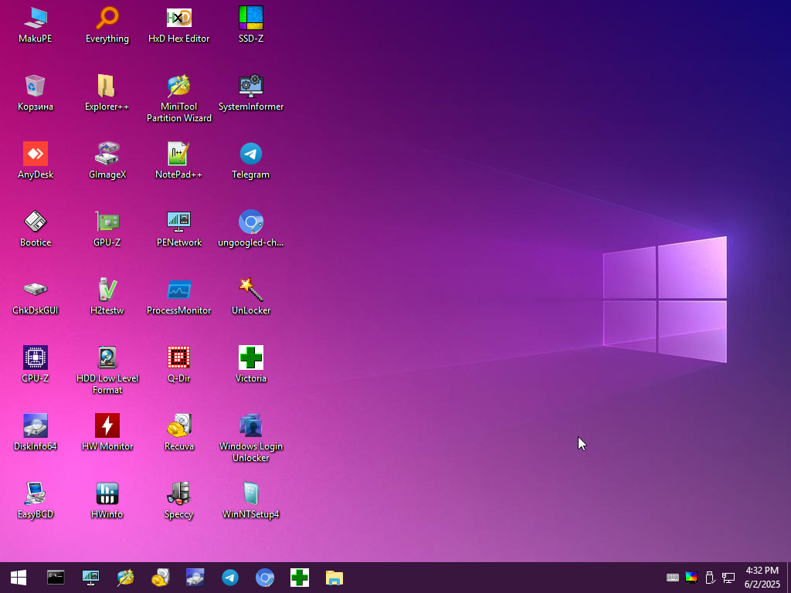
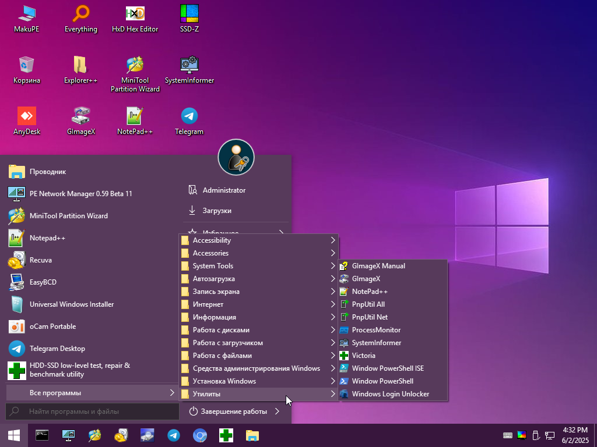
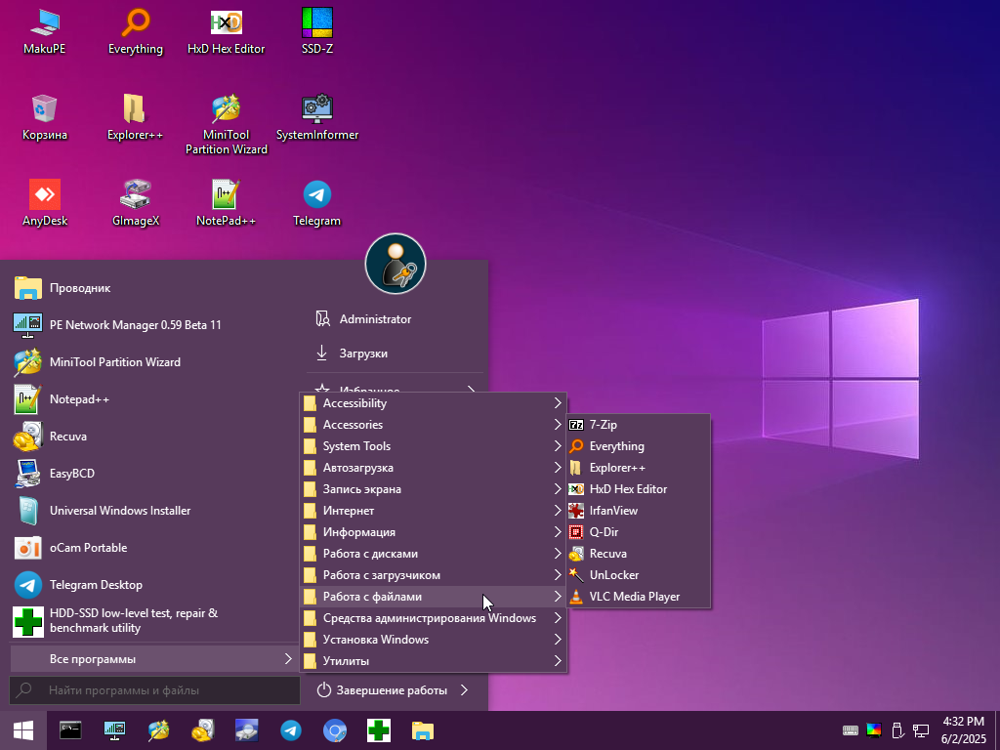
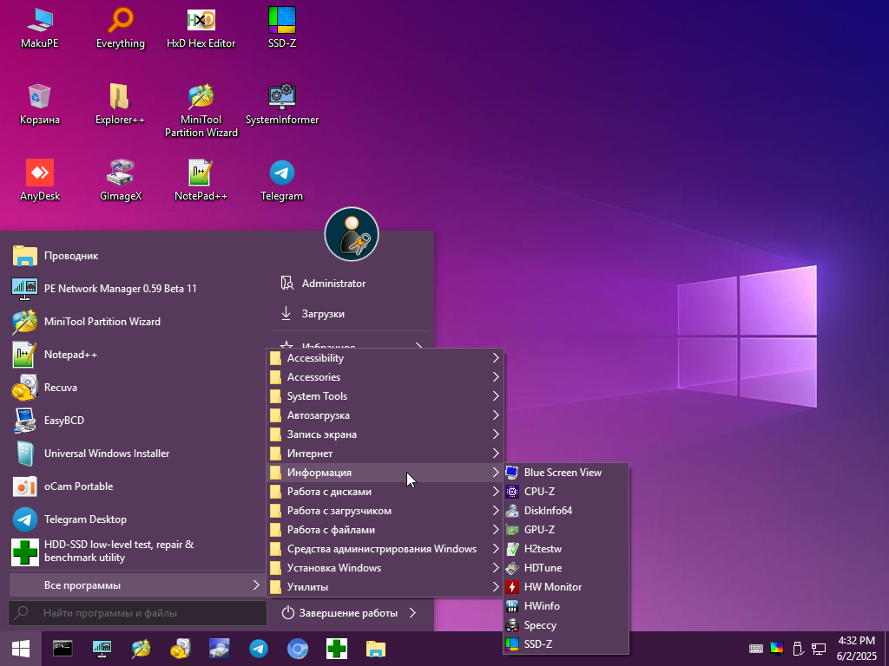
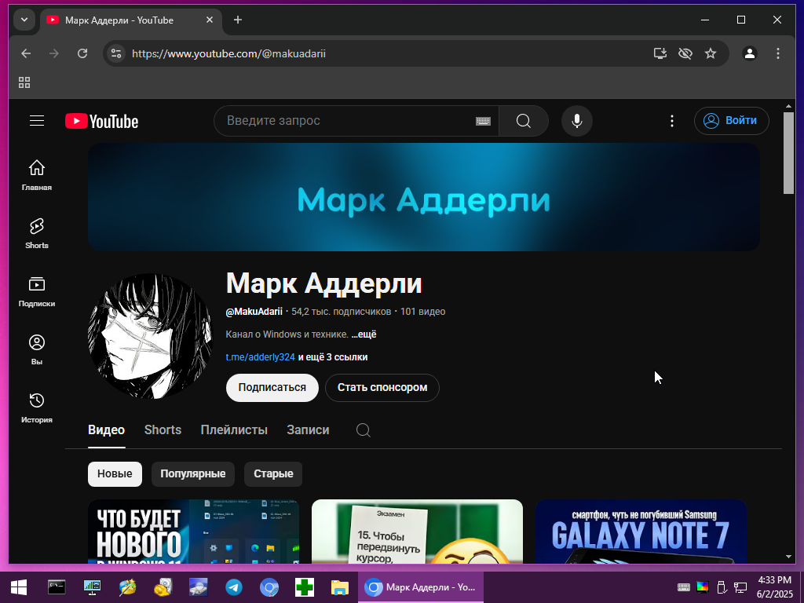
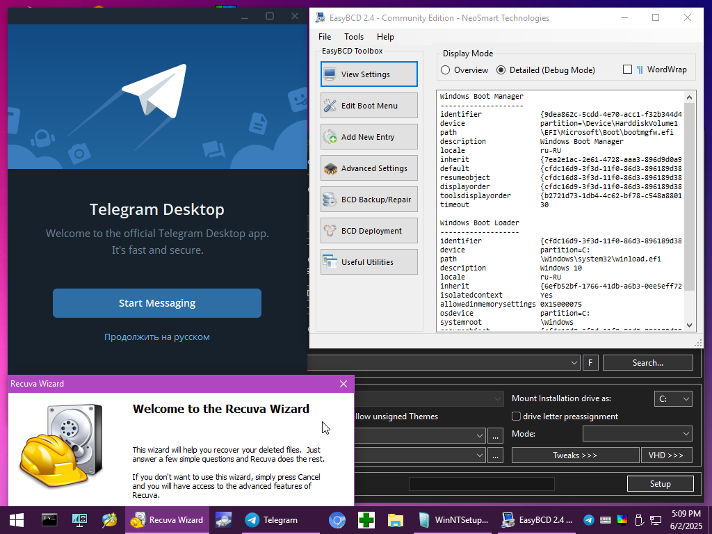

Adderly.Top
Adderly.Top
Скачать MakuPE
MakuPE - это удобная и быстрая среда восстановления Windows, которая помогает вернуть систему к жизни в случае сбоев. С её помощью вы сможете получить доступ к файлам, даже если основная ОС не загружается. Образ содержит набор необходимых инструментов для диагностики, восстановления и обслуживания компьютера. Просто запишите образ на маленькую флешку, например до двух гигабайт и держите всегда под рукой надёжный инструмент для восстановления системы.






Браузер Chrome, Telegram, 7-Zip, AnyDesk, Recuva, EasyBCD, WinNTSetup, CPU-Z, GPU-Z, CrystalDiskInfo, Unlocker, Victoria, Everything, System Informer, Speccy, Explorer++, Bootice, Q-Dir, HDD Low Level, Notepad++, Mini Tool Partition Wizard, Hex Editor...
В MakuPE есть встроенные интернет драйвера, что позволит выйти в интернет с помощью браузера Ungoogled Chromium, и даже зайти в Telegram.
Так же по желанию, можно будет попросить помощь у друга или родственника
и дать доступ к своему ПК с помощью AnyDesk.
Образ теперь основан на Windows 10 1809, что делает его на пару сотен мегабайт легче, и он поместится даже на 2 ГБ флешку.
И самое главное, MakuPE поддерживает GPT и UEFI, что без проблем позволит запустить её на современном ПК.
Windows PE нельзя установить как обычную систему. Этот образ создан для записи на флешку, чтобы можно было запускать портативную Windows напрямую из под USB накопителя. Зачастую это полезно для временного доступа к файлам на компьютере, и особенно - восстановления системы.
Образ просто нужно записать на флешку для последующего запуска.
Перейдите на сайт rufus.ie, и скачайте программу.
Далее, в пункте "Устройство" выберите вашу флешку, на 8 ГБ и выше.
В пункте "Метод загрузки", справа есть кнопка "Выбрать". Выберите ISO образ MakuPE.
Далее, в "Схема раздела" вам нужно указать таблицу разделов вашего SSD. - Как узнать схему раздела?
Зачастую, "Целевую систему" и "Файловую систему" можно не трогать. Никакие галочки не нажимайте, и при каких либо диалогах снимайте их.
Для начала записи на флешку, нажмите "СТАРТ", и согласитесь на форматирование.
Когда прогрессбар дойдёт до 100% и будет "Готов", закройте окно.
Второй способ - Ventoy, но лучше используйте первый вариант.
Перейдите на сайт ventoy.net, и скачайте программу.
Далее, распакуйте архив куда-либо и запустите файл Ventoy2Disk.exe.
В пункте "Устройство" выберите вашу флешку, на 8 ГБ и выше.
Сверху на вкладке "Настройки" обязательно поставьте галочку на Secure Boot Support если он у вас включён. Как узнать, включён ли Secure Boot?
Осталось нажать кнопку "Установить", и согласиться на форматирование флешки. После этого, вам останется просто перекинуть ISO файл на уже чистую флешку.
После записи образа на флешку
Для входа в MakuPE вам достаточно перезагрузиться с флешки.
Для этого, откройте меню Пуск, зажмите клавишу Shift, и перезагрузитесь.
Затем, выберите USB FDD, или что либо связанное с USB.